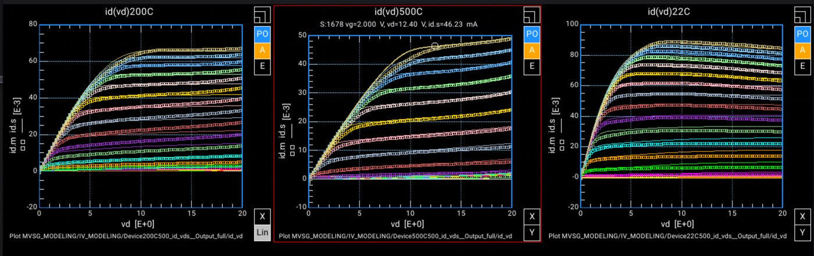

Compact modelling & GaN device physics
Work under Prof. Lan Wei at Waterloo on temperature effects in GaN RF HEMTs, in collaboration with the National Research Council of Canada on their first-generation GaN device.
MIT Virtual Source FET modelling
A compact model for GaN transistors in RF applications, implemented in Verilog-A. RF GaN e-HEMT parameter fitting was carried out in Keysight ADS IC-CAP against the MVSG 5.0 Beta1 model, with the emphasis on how temperature shifts transistor behaviour rather than on room-temperature fit alone.
Compact models are what let a circuit designer simulate a device they will never characterize themselves. If the model only holds at one temperature, every thermal margin downstream of it is guesswork — which is why the temperature dependence was the focus rather than an afterthought.

E. Lewis, R. Fang, D. Xu, J. Alant, R. Griffin, L. Wei, “RF GaN HEMT Compact Modelling with High-Temperature Effects for Extreme Environment Applications,” 21st Canadian Semiconductor Science and Technology Conference (CSSTC), 2026.
Presented orally. The “extreme environment” framing is the point of the work — defence and space applications put RF GaN through temperature ranges where a room-temperature-fitted model stops being predictive.
Temperature effects in GaN RF HEMTs
Ongoing work in Prof. Lan Wei's group, collaborating with the NRC and their first-generation GaN device. The scope runs from device physics through to physical circuit design — understanding what the material is doing, then representing it faithfully enough that a circuit built on top behaves as predicted.
GaN-on-Si integrated power stage
New product development work on a GaN-on-Si IPS — an integrated power stage that places a silicon driver die on a unidirectional GaN device. My contribution covers dynamic characterization, performance evaluation against internal metrics, defining test procedures for the new product, and analysing optimal and sub-optimal operating parameters including slew-rate control and protection features.
Alongside that, technology work with the FAE team: studying competitor and comparable ICs, and examining packaging and layout practices for larger dies in low-ohmic and enhancement-mode GaN.